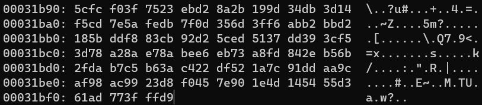
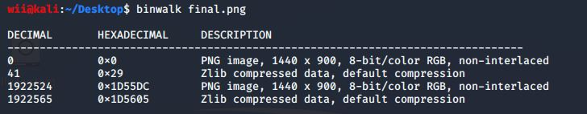
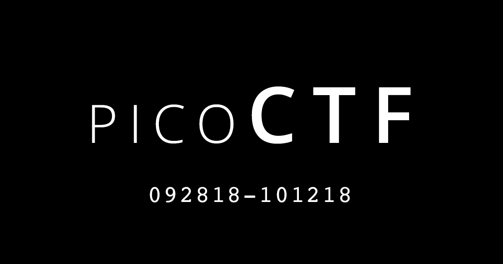
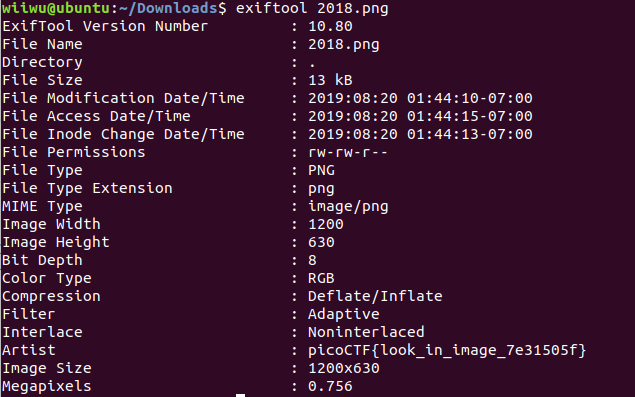

作為一個CTF垃圾菜雞，每次下手都只能從別人可能根本不屑的misc開始看能不能撿些分數，最近想說仔細把Stego的套路都熟悉一下，下次撿分的時候至少不要連misc都撿不了，所以讀了一些關於Stego套路的文章，這裡稍微整理一下。
隱藏檔案
這應該算是很容易被發現的一個套路，把檔案藏在圖片裡，原理是讀圖片的工具通常遇到’FF D9’結尾就會把它當成jpg檔了，所以接在他後面的data它也不管，圖片也就能正常顯示，把副檔名改成zip就能變回壓縮檔了，只是覺得滿有趣所以記一下。

在windows裡面可以直接用
copy /b a.jpg+b.zip output.jpg 做出來，在linux裡也可以用 cat a.jpg b.zip > output.jpg 做到。遇到這種只要用winhex開起來看看就會發現後面還有東西了，或是用binwalk也可以輕易被發現。

那如果需要把隱藏的東西，或是合在同一個檔案的東西拆開來有幾種方式。
- winhex 把要擷取的地方選起來，右鍵Edit->Copy Block->Into New File
- dd
dd if=[input] of=[output] skip=[從哪個byte開始做] bs=1 - foremost
foremost [pic]
LSB(Least Significant Bit)
把訊息藏在圖片的數據後面，在CTF裡面遇到過，都用stegsolve直接解決的，每個pixel都是三原色組成的，每個顏色8bits，如果只改了最後一個bit，通常是看不太出來的，所以可以把訊息藏在最後一個bit裡，用ascii或是只用這一bits組成不同的圖案來隱藏訊息。
這種作法jpg是做不到的，因為jpg會壓縮圖片，這些隱藏訊息就可能被破壞了，png和bmp才有可能用上這套路。
順帶一提遇到QRcode或是條碼都可以用這個網站來掃。
檔案修復
有時候是給的圖片壞掉了要去修，這種時候需要稍微知到一下各種檔案的結構會比較好，不過常常都是開頭的地方出錯而已，用編輯器修好就好了。
有時候是需要改圖片的長寬，把它改大一點就能看到被藏起來的部分了。
metadata
有時候訊息會直接藏在圖片的metadata，可以用windows的右鍵內容直接看到，或是在linux下可以 exiftool 來查看。
也可以直接丟到線上處理。
像是picoCTF 2018的Truly an Artist。


雙圖
通常會給兩張圖的，就會需要比較兩張圖的差異，可能會是XOR/SUB/AND/OR/MUL不一定，可以善用stegsolve裡面的Analysis->Image Combiner處理。
有時候會是需要比較data內的差異，抓出有問題的data段來分析。
Blind WaterMark
除了圖片以外，音檔、pdf、pcap也都可以藏東西，之後只要有遇到相關的題目會再回來補上。